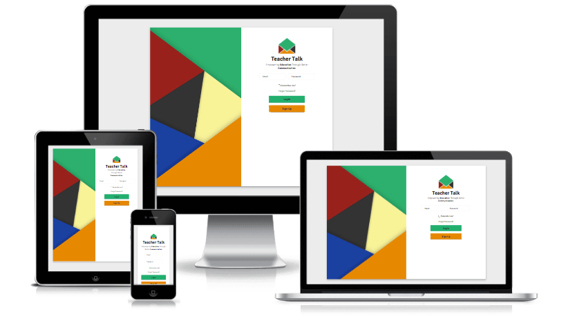

Teacher Talk
Live Site | View CodeI collaborated with a development team of three Java back end developers to create a messaging system streamlining the parent-teacher communication by providing multi-language templates sending either an email or text to the parent.
Technology Used
Front End Development
• AJAX • Git Collaboration • HTML • jQuery • Photoshop • SASS
Back End Development
• Hibernate • Java • Sprint MVC •PostgreSQL
About This Project
The idea of Teacher Talk came from a developer who spent five years teaching middle and high schoolers. He noticed that one common occurance was the repetitive emails he was sending to parents. These messages ranged from failing a test, to absent, or behavior problems. He wanted a place where teachers could quickly go and send a templated message to parents. He reconized that an application like this would save the teacher hours a day, and he felt passionate about turning this idea into a reality. Together we had a team of 3 Java back end developers and myself as the sole front end designer and developer working intensly for 2.5 weeks to make this pitch a reality.
Weaknesses
- Short on time
- Creating something from scratch
- Only 1 person on the Front End
Opportunities
- Create something that can be a positive help to teachers
- Learn how Java processes data
- Utilize colors
- Make the application as simple as possible
When we started the project our first step was walking through the functionality. We took it to the whiteboards and instead of sketching design we sketched user flow. Based on where the user clicked what function did we need to occur? Using this thought process we were able to determine our MVP. From there we made a list of B and C features we would impliment if time allowed.
Goal of Project - MVP
Have a registration for parents and teachers. The information they entered would be stored in a database on the backend. The teacher would be able to login select multiple students and send a templated email.
Challenges/Problems Solved
Being the only Front End Designer and Developer it required constant communication between myself and the back end. I had to make sure I was communicating effectively enough so that we could set realistic goals. The functionality for our MVP was completed by the end of week one. From there the back end implimented a history log and forgot / reset password link.
As a designer my first goal was creating a logo once the logo was agreed upon I would form a branding style around the logo. As you can see it took dozens of iteriations before we agreed that the envelope was the most effective and concise way to communicate to our users what exactly was this tool.
The majority of our application was input fields. Because of this I wanted to display the labels in an unique way. I added a focus state to the input field that when a user clicked into it the label would transform up creating a nice soft UI feel. I soon realized that I needed to use JavaScript to read the input fields. If it had a length then the label needed to stay transformed up so that it wouldn't cover the content.
Another challenge I came across was styling the content for the message portal. In my mockups I had the header being a standard horizontal header 100px tall. The message area would mirror gmail in that the teacher searches for students selects a template and then it sends. When I started coding this out I realized the design was not working with the space. I went back to the beginning started brainstorming researching and looking at dribbble when I came up with another idea. I moved the navigation to the side. This took up more room and the message area no longer felt like it was awkwardly sticking out.
Future Plans
To continuely impove this site we are looking at implementing Twilio API to allow for automated calling of parents. Build an internal messaging service to allow parents to communicate with the teachers without leaving the application. We would like to add a calendar link to allow parents to set up an in person meeting if they choose. Finally create a mobile application of the site.
Whiteboard Sketches
Logo Process
End Result